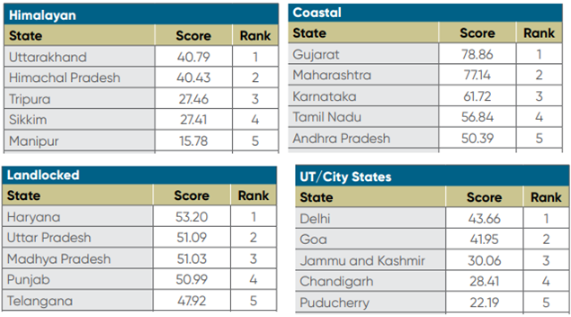

NITI Aayog
Export Preparedness Index 2021: Key Takeaways
Relevant to GCO and State Champions
- Aim: To identify challenges and opportunities, enhance the effectiveness of government policies and encourage a facilitative regulatory framework for export.
- The index entails four pillars, eleven sub pillars and sixty indicators and covers across 28 states and 8 UTs.
- Four Pillars:
-
Policy: A comprehensive trade policy providing a strategic direction for exports and imports.
-
Business Ecosystem: An efficient business ecosystem helping states attract investments and create an enabling infrastructure for individuals to initiate start-ups.
-
Export Ecosystem: Assess the business environment, which is specific to exports.
-
Export Performance: This is the only output-based parameter and examines the reach of export footprints of States and Union Territories.
- Eleven Sub-pillars
- The index also took into consideration 11 sub-pillars - export promotion policy, institutional framework, business environment, infrastructure, transport connectivity, access to finance, export infrastructure, trade support, R&D infrastructure, export diversification, and growth orientation.
- Features of Index: The EPI is a data-driven effort to identify the core areas crucial for export promotion at the sub-national level (states and union territories).
- It explores and highlights India’s export potential by examining the different contributions made by each state and union territories
- Performance of Indian States/UTs: Gujarat has been named India’s top State in terms of export preparedness for the second year in a row as per the Export Preparedness Index (EPI) 2021 released by the NITI Aayog. Maharashtra, Karnataka, Tamil Nadu were ranked second, third and fourth in the index, as coastal States with higher industrial activity and access to seaports account for a majority of India’s exports.

Significance of Export Preparedness Index (EPI)
-
Examines the Export Performance of States and UTs: It aims to examine the export performance and the export readiness of the states and union territories.
-
The idea behind the index is to create a benchmark to rank these states and UTs to help them individually promote a conducive export environment in the region.
-
Helps in Identifying Obstacles to Export: The index is an essential tool for policymakers and exporters to identify the drivers and obstacles and examine the same to strategize a viable export map for the state.
-
A guide to State Government: The Index would be a helpful guide for the state governments to benchmark regional performance with respect to export promotion and thus deliver key policy insights on how to improve and enhance the exports.
-
Instil Competition Among States: Its primary goal is to instil competition among all Indian states (‘Coastal’, ‘Landlocked’, ‘Himalayan’, and ‘UTs/City-States’) to bring about favourable export-promotion policies, ease the regulatory framework to prompt subnational export promotion, create the necessary infrastructure for exports, and assist in identifying strategic recommendations for improving export competitiveness.
Challenges to Indian Exports?
-
The EPI identifies three major challenges to India’s export promotion efforts.
-
Intra- and inter-regional differences in export infrastructure
-
Weak trade support and growth orientation across States
-
Lack of R&D infrastructure to promote complex and unique exports.
EPI’s Comments Indian Exports?
-
Export Drives Indian Economy:
-
Gross Domestic Product (GDP)= Consumption + Investment + Government Expenditure + (Exports – Imports).
-
Thus, export is an essential component to increase the GDP values.
-
Export is an inalienable component of India’s economic growth as exports have been contributing roughly 20% on average to the GDP of India for the past decade
-
Recovery From Covid-19: The Covid-19 pandemic upended the existing economic structures and exposed the fragility of global trade and economy.
-
After two years of the Covid-19 pandemic, the recovery from adverse effects on economies is still far from achieved.
-
However, India has shown great resilience in exports and achieved record high growth. India has been showing positive statistics in exports since the beginning of FY 2021-22 and in December 2021 India achieved the highest ever export of 37 billion USD, a 37% jump over December 2020.
- Suggestion to Increase Export
-
Export Infrastructure and Market Concentration: For better export performance, it is necessary to invest in developing reliable and efficient export infrastructure, which will help in cost reduction and improve efficiency in the supply of exports
-
Need for export diversification: It plays an important role in achieving stability and growth in the export sector.
-
Emphasis on key strategies like a development of export infrastructure, strengthening industry-academia linkages and creating state-level engagements for economic diplomacy to address the challenges in exports.
-
The private sector can also play an important role in export promotion.